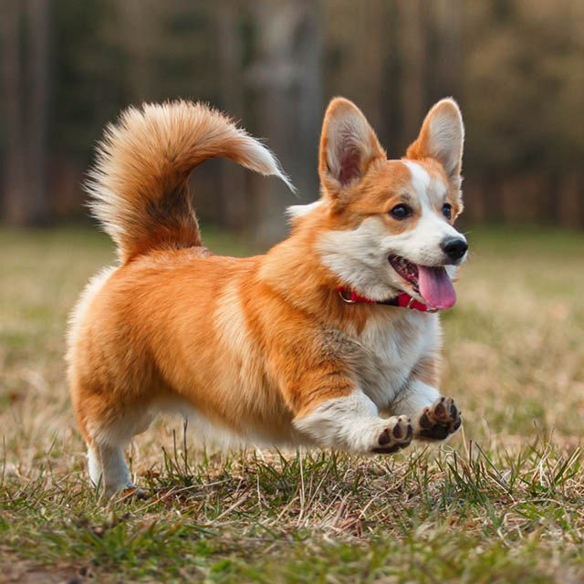
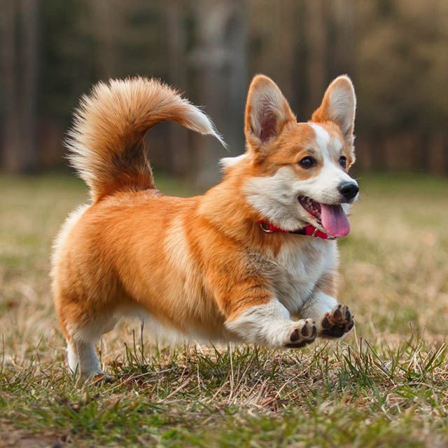

Si quieres ver más imágenes de perritos, da click en este enlace
3 cosas que los perritos aman
3 cosas que los perritos odian
¿Tu perrito es cachorro o adulto?
¿Qué tipo de personalidad tiene tu perro?
 
